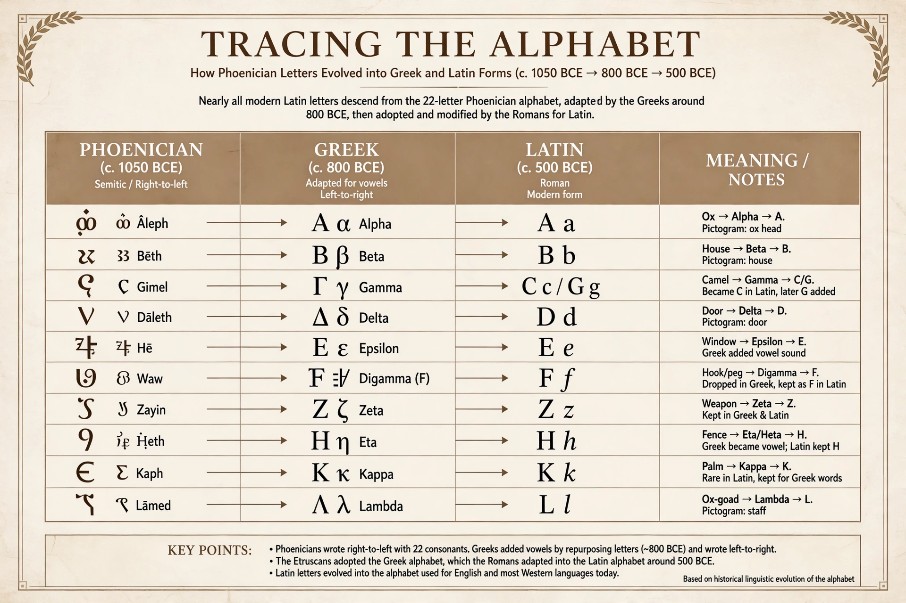

Alphabet
From Wikipedia, the free encyclopedia

An alphabet is a standard set of letters — basic written symbols — each representing a Phoneme (basic sound unit) of a spoken language. The word derives from alpha and beta, the first two letters of the Greek alphabet. Nearly all the world's alphabets descend from the Proto-Sinaitic script and its descendant, the Phoenician alphabet (c. 1050 BC), the first fully phonetic script with a letter for each consonant.
Origins
Semitic workers in Egypt around 1800 BC adapted hieroglyphic signs acrophonically — a picture of an ox (ʾalp) for the sound /ʔ/ — creating the first consonantal alphabet (Abjad). Phoenician traders spread their 22-letter script around the Mediterranean; the Greeks adopted it (c. 800 BC), innovating letters for vowels by reassigning surplus consonants — the decisive step to a 'true' alphabet — and passing it on, via Etruscan, to the Latin alphabet, now the world's most widely used script.
Types of writing systems
Alphabets contrast with abjads (consonant-only: Arabic, Hebrew), abugidas (each character an inherent-vowel syllable modified by marks: Devanagari, Ethiopic), syllabaries (Japanese kana, Cherokee) and logographies (Chinese). The International Phonetic Alphabet (1888) provides a universal scientific alphabet for transcribing all languages.
Ordering and spread
Alphabetical order — already fixed in Ugaritic tablets of the 14th century BC — enabled dictionaries, indexes and sorting, quietly structuring information systems ever since. The Latin, Cyrillic and Arabic alphabets dominate world literacy; Hangul of Korea (1443) is a featural alphabet designed by royal commission, unique in its documented invention.